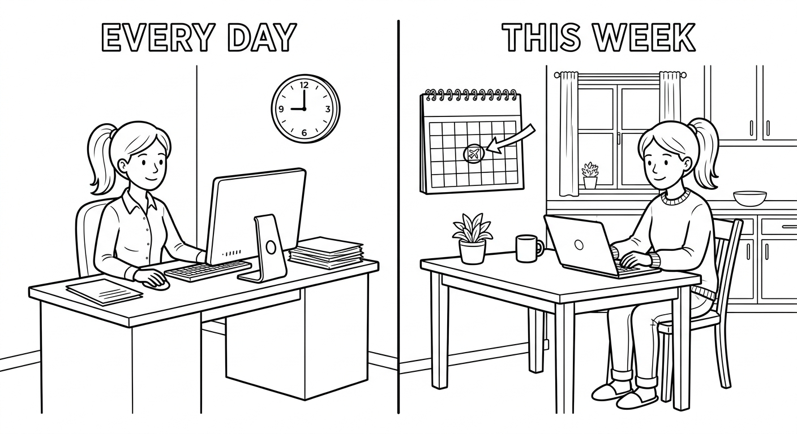
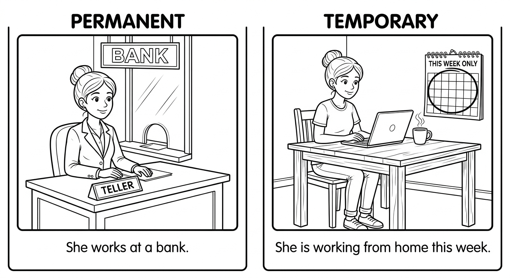
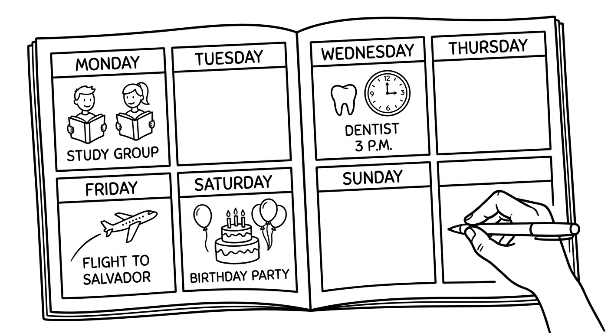
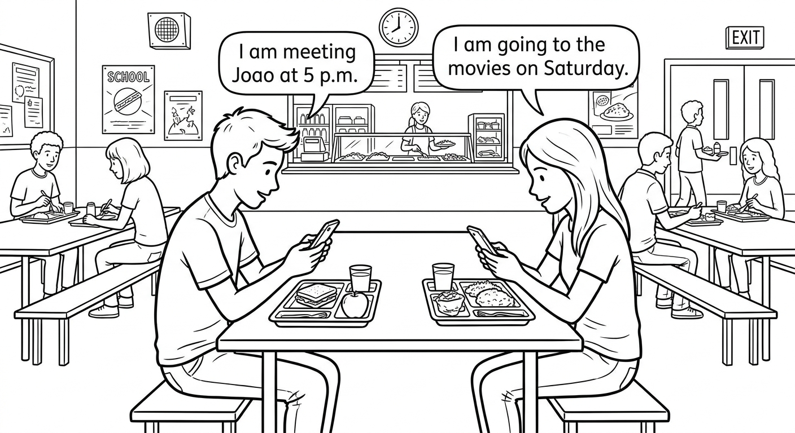
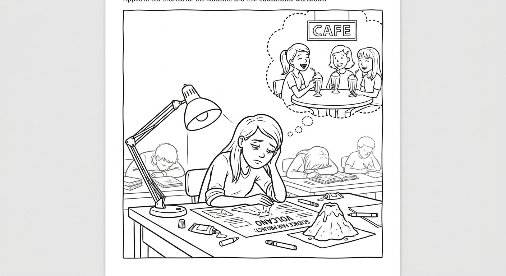
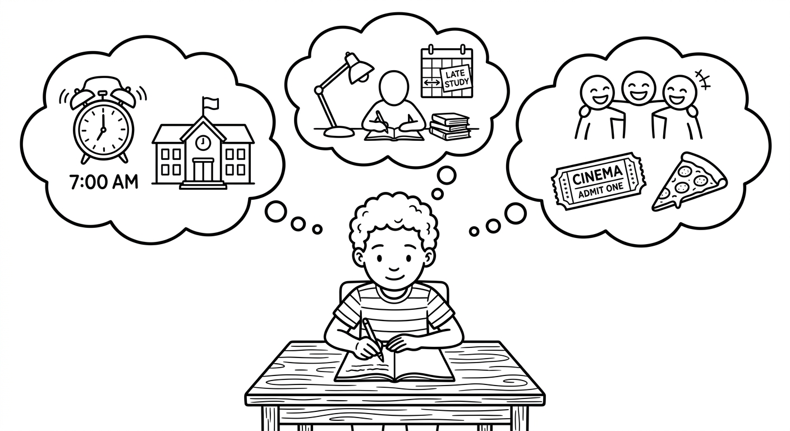

Present Continuous: Expanded Usage
You already know the Present Continuous for actions happening right now. In this chapter, you will learn its expanded uses: comparing it with the Present Simple, using it for future arrangements, and understanding temporary versus permanent situations.

Present Continuous vs Present Simple
Both tenses describe the present, but they have different uses. Understanding the difference is essential for accurate English.
| Present Simple | Present Continuous |
|---|---|
| Habits and routines I drink coffee every morning. |
Happening right now I am drinking tea right now. |
| Permanent situations She lives in Curitiba. |
Temporary situations She is living in Curitiba this semester. |
| General truths / facts Water boils at 100°C. |
Changing / developing situations The weather is getting colder. |
| Frequency / how often He goes to the gym three times a week. |
Actions around now (not necessarily at this exact second) He is reading an interesting book. (these days) |
Time expressions can help you decide which tense to use.
| Present Simple | Present Continuous |
|---|---|
| always / usually / often / sometimes / never | now / right now / at the moment |
| every day / every week / every month | today / this week / this month / this year |
| on Mondays / on weekends / in the morning | currently / at present / for the time being |
| twice a week / once a month | these days / nowadays (with changing situations) |
Contrastive Pairs
Present Simple: Rafaela takes the bus to work every day.
Rafaela pega o onibus para o trabalho todos os dias.
Present Continuous: Today, Rafaela is taking a taxi because it is raining.
Hoje, Rafaela esta pegando um taxi porque esta chovendo.
Present Simple: Marcos works at a bank.
Marcos trabalha em um banco.
Present Continuous: Marcos is working from home this week.
Marcos esta trabalhando de casa esta semana.
Present Simple: Prices rise and fall over time.
Os precos sobem e descem ao longo do tempo.
Present Continuous: Prices are rising very fast this year.
Os precos estao subindo muito rapido este ano.
Present Simple: Juliana studies biology at university.
Juliana estuda biologia na universidade.
Present Continuous: This semester, she is studying extra hard for her exams.
Neste semestre, ela esta estudando muito para as provas.
Present Simple: Bruno eats lunch at school every day.
Bruno almoca na escola todos os dias.
Present Continuous: This month, Bruno is eating lunch at his grandmother's house.
Neste mes, Bruno esta almocando na casa da avo.
Present Simple: Fernanda speaks three languages.
Fernanda fala tres idiomas.
Present Continuous: Right now, Fernanda is speaking English with a tourist.
Agora, Fernanda esta falando ingles com um turista.

Ask yourself: Is this a permanent fact or a temporary situation?
- "She works at a bank." — This is her permanent job. Use Present Simple.
- "She is working at a bank this month." — This is temporary, maybe an internship. Use Present Continuous.
Em portugues, muitas vezes usamos o mesmo tempo verbal para os dois casos. Em ingles, a escolha do tempo verbal mostra se a situacao e permanente ou temporaria.
Suggested time: 30 minutes
Key concept: Portuguese speakers tend to use the Present Simple for both permanent and temporary situations. Emphasize that in English, the Present Continuous signals that something is different from the norm or limited in time. Use contrastive pairs on the board and ask students to identify which is permanent and which is temporary.
Common error: Students may say "I live in Sao Paulo this month" when they mean a temporary stay. Correct to "I am living in Sao Paulo this month."
Activity: Write five sentences on the board using Present Simple. Ask students to create a temporary version using Present Continuous (e.g., "I walk to school" becomes "This week, I am taking the bus to school because my bicycle is broken").
Fill in the blanks with the correct form of the verb in parentheses. Decide whether to use the Present Simple or the Present Continuous based on the context.
Select the correct tense to complete each sentence.
Helena _______ English at a language school. It is her permanent job.
b) teachesShhh! I _______ to concentrate on my homework.
c) am tryingThe population of the city _______ rapidly these days.
b) is growingFelipe usually _______ coffee, but this morning he _______ juice.
a) drinks / is drinkingThe Earth _______ around the Sun. This is a scientific fact.
c) revolvesPresent Continuous for Future Arrangements
We can use the Present Continuous to talk about future plans and arrangements that have already been decided and organized. These are definite plans, often involving other people or specific times and places.
| Structure | Example |
|---|---|
| Subject + am/is/are + verb-ing + future time | I am meeting Ana tomorrow. |
| Subject + am/is/are + verb-ing + future time | We are having dinner at 8 tonight. |
| Subject + am/is/are + not + verb-ing + future time | She is not coming to the party on Saturday. |
| Am/Is/Are + subject + verb-ing + future time? | Are you doing anything this weekend? |
Key point: The future time expression (tomorrow, tonight, next week, on Friday, etc.) makes it clear that we are talking about the future, not the present.
Examples: Future Arrangements
I am meeting my study group at the library tomorrow afternoon.
Eu vou encontrar meu grupo de estudos na biblioteca amanha a tarde. (Ja esta combinado.)
We are flying to Salvador next Friday.
Nos vamos voar para Salvador na proxima sexta-feira. (As passagens ja foram compradas.)
Camila is having a birthday party on Saturday night.
Camila vai dar uma festa de aniversario no sabado a noite. (Ja esta organizado.)
Rodrigo is not playing in the match next Sunday. He hurt his ankle.
Rodrigo nao vai jogar na partida no proximo domingo. Ele machucou o tornozelo.
Are you doing anything special this weekend?
Voce vai fazer algo especial neste fim de semana?
I am seeing the dentist on Wednesday at 3 p.m.
Eu vou ao dentista na quarta-feira as 15h. (A consulta ja esta marcada.)

Use the Present Continuous for the future only for definite arrangements — things you have already organized, often with other people involved.
- Arrangement (Present Continuous): "I am meeting Joao at 5 p.m." — It is arranged. Joao knows about it.
- Intention (going to): "I am going to study harder next semester." — This is your plan or intention, but nothing is arranged yet.
- Prediction (will): "It will rain tomorrow." — A prediction, not an arrangement.
Em portugues, normalmente usamos "vou + infinitivo" para todos esses casos. Em ingles, a escolha entre Present Continuous, "going to" e "will" depende do tipo de plano futuro.
Dialogue: Planning the Weekend

Suggested time: 30 minutes
Key concept: Help students see that the Present Continuous for future is very common in everyday conversation about arrangements. In Portuguese, "vou + infinitivo" covers both arrangements and intentions, so students need practice distinguishing between the two in English.
Dialogue activity: Have students read the dialogue in pairs. Then ask them to underline every example of Present Continuous used for the future. Ask: "How do we know these are future, not present?" (Answer: because of time expressions like "this weekend," "on Saturday," "on Sunday," "at 2 p.m.")
Extension: Students create their own weekend plan dialogue with a partner, using at least 5 examples of Present Continuous for future arrangements.
Fill in the blanks with the correct form of the verb in parentheses. Decide whether the sentence describes a habit (Present Simple), a temporary/current action (Present Continuous), or a future arrangement (Present Continuous with future meaning). Pay attention to time expressions.
Rewrite each sentence using the Present Continuous to express a future arrangement. Keep the same meaning and time expression.
I plan to meet Ana on Saturday. (Rewrite using Present Continuous)
I am meeting Ana on Saturday.We have plans to visit the museum next Sunday. (Rewrite using Present Continuous)
We are visiting the museum next Sunday.My parents have arranged to have dinner at a restaurant tonight. (Rewrite using Present Continuous)
My parents are having dinner at a restaurant tonight.Rafael has a doctor's appointment on Thursday at 2 p.m. (Rewrite using Present Continuous)
Rafael is seeing the doctor on Thursday at 2 p.m.Our class has plans to go on a field trip next month. (Rewrite using Present Continuous)
Our class is going on a field trip next month.Mariana and Joao have booked a flight to Florianopolis for next week. (Rewrite using Present Continuous)
Mariana and Joao are flying to Florianopolis next week.I have arranged to study with Beatriz at the library on Sunday. (Rewrite using Present Continuous)
I am studying with Beatriz at the library on Sunday.The band has a concert scheduled for Friday night. (Rewrite using Present Continuous)
The band is playing a concert on Friday night.Reading: A Week of Changes
Isabela is 17 years old and lives in Porto Alegre. She is a student at a public school and she is in her final year. Normally, she has a very organized routine. She wakes up at 6:30 every morning, takes a shower, eats breakfast with her family, and catches the bus to school at 7:15. She studies in the morning and usually has lunch at home. In the afternoon, she goes to a language school where she studies English twice a week. On the other days, she does her homework, helps her mother with the housework, or meets her friends at a cafe near her house. She goes to bed at around 10:30 every night.
But this week is very different from her normal routine. The school is organizing a science fair, and Isabela is the leader of her group's project. So this week, she is waking up earlier than usual — at 5:30 — to finish the project before school. She is not eating breakfast at home because she is leaving the house too early. Instead, she is buying a snack at the school cafeteria.
She is also not going to her English classes this week because she is spending every afternoon at school, working on the science fair project with her group. Her English teacher, Professor Marcos, understands the situation and is giving her extra exercises to do at home. Isabela is working very hard, but she is also feeling a bit tired and stressed.
At the same time, Isabela is making plans for the weekend. On Saturday, she is presenting her group's project at the science fair. She is nervous but excited. After the presentation, she is going to the shopping center with her friends to celebrate. They are eating pizza at their favorite restaurant and then watching a movie at the cinema.
On Sunday, things are going back to normal. She is sleeping late, having a relaxed lunch with her family, and doing some homework in the afternoon. She is looking forward to her normal routine again. As Isabela says, "Change is interesting, but I also love my routine!"

Suggested time: 25 minutes
Pre-reading: Ask students: "Has your routine ever changed temporarily? Why?" Have a brief class discussion. This activates prior knowledge and connects to the reading.
Reading strategy: Ask students to read the text once for general understanding. Then read again and highlight or underline all Present Simple verbs in one color and Present Continuous verbs in another. This visual activity reinforces the grammar point.
Discussion: After the exercises, ask students: "Which verbs in the text are Present Continuous for happening now/this week (temporary), and which are for future arrangements (plans for Saturday and Sunday)?"
Read each sentence. Write T (True) or F (False) based on the text. Correct the false statements.
Answer the questions in complete sentences based on the text.
What does Isabela normally do in the afternoon? (Use Present Simple)
She goes to a language school where she studies English twice a week. On other days, she does her homework, helps her mother, or meets her friends at a cafe.Why is this week different for Isabela? (Use Present Continuous)
This week is different because the school is organizing a science fair and Isabela is the leader of her group's project. She is spending every afternoon at school working on the project.What are Isabela's plans for Saturday after the presentation? (Use Present Continuous for future)
After the presentation, she is going to the shopping center with her friends. They are eating pizza and then watching a movie at the cinema.Find one sentence in the text that uses the Present Simple (permanent/routine) and one that uses the Present Continuous (temporary/this week). Write them below.
Present Simple (example): "She wakes up at 6:30 every morning." / Present Continuous (example): "This week, she is waking up earlier than usual." (Other correct examples are acceptable.)Writing: My Routine, My Changes, and My Plans
Write three short paragraphs about your life. Follow the instructions for each paragraph. Use the sentence starters below to help you.
Think about the contrast between what you always do and what is different right now. Then think about what you have arranged for the coming weekend. This exercise practices all three uses of the tenses you learned in this chapter.
- Paragraph 1: Present Simple — your normal routine
- Paragraph 2: Present Continuous — what is different or temporary this week/month
- Paragraph 3: Present Continuous for future — your plans for the weekend
Dica: Pense no contraste entre o que voce sempre faz e o que esta diferente agora. Depois, pense nos seus planos ja combinados para o fim de semana.
Paragraph 1: My Normal Routine (Present Simple)
Every day, I wake up at ___. I usually ___. In the morning, I ___. In the afternoon, I ___. In the evening, I usually ___.
Paragraph 2: What Is Different This Week (Present Continuous)
This week is a bit different. I am ___. I am not ___ because ___. Instead, I am ___. Also, I am ___ this week because ___.
Paragraph 3: My Weekend Plans (Present Continuous for Future)
I have some plans for this weekend. On Saturday, I am ___. I am meeting ___ at ___. On Sunday, I am ___. In the evening, I am ___.

Suggested time: 25 minutes
Assessment criteria:
- Correct use of Present Simple in Paragraph 1 for routines and habits
- Correct use of Present Continuous in Paragraph 2 for temporary situations
- Correct use of Present Continuous in Paragraph 3 for future arrangements (with clear future time expressions)
- At least 4 different verbs in each paragraph
- Clear contrast between the three paragraphs
- Coherent and organized writing
Differentiation: For stronger students, ask them to add a fourth paragraph comparing their routine to a family member's routine. For students who need more support, allow them to write 3-4 sentences per paragraph instead of full paragraphs.
Extension activity: Have students exchange paragraphs with a partner. The partner reads and identifies which tense is used in each paragraph and whether it is used correctly. Then they discuss any differences in their routines and plans.
Chapter 7 - Answer Key
Exercise 1: Present Simple or Present Continuous?
Exercise 2: Choose the Correct Option
Exercise 3: Present, Temporary, or Future?
Exercise 4: Rewrite Using the Present Continuous for the Future
Exercise 5: True or False
Exercise 6: Answer the Questions
Exercise 7: Write About Your Life Right Now
Answers will vary. Check for correct use of Present Simple in Paragraph 1 (routines/habits), Present Continuous in Paragraph 2 (temporary situations happening now), and Present Continuous with future time expressions in Paragraph 3 (weekend arrangements). Look for at least 4 different verbs per paragraph and clear contrast between the three paragraphs.